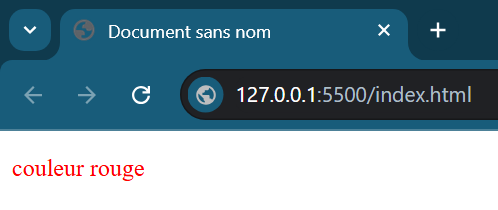

Le CSS (Cascading Style Sheets, ou Feuilles de styles en cascade) sert à mettre en forme des documents web, tels que les pages HTML ou XML.
Il permet de gérer l'apparence des éléments (couleurs, bordures, polices, etc.) et leur placement (largeur, hauteur, positionnement, etc.).
Le rendu d'une page web peut être intégralement modifié sans aucun code supplémentaire dans le fichier HTML.
On peut écrire du code en langage CSS à trois endroits différents :
<head> du fichier HTML, entre des
balises <style> (CSS interne).
style (méthode la moins recommandée).
Par exemple : <div align="center">.
L'association du fichier HTML à un fichier CSS externe se fait dans
l'en-tête <head> du document HTML grâce à la balise
suivante :
<link rel="stylesheet" href="style.css" />
Ceci indique que le fichier HTML est associé au fichier
style.css chargé de la mise en forme.
Imaginons que l'on souhaite que le texte du paragraphe du document HTML soit de couleur rouge.
Dans le fichier HTML, on placera la balise
<link> pour pointer vers le fichier CSS (ici appelé
fichiercss.css) :
<!doctype html>
<html>
<head>
<meta charset="UTF-8">
<link rel="stylesheet" href="fichiercss.css">
<title>Document sans nom</title>
</head>
<body >
<p>couleur rouge</p>
</body>
</html>
Dans le fichier CSS (fichiercss.css), on ajoute la règle
de style ciblant les paragraphes (p) :
@charset "utf-8";
/* CSS Document */
p {
color: red;
}
Le résultat obtenu dans le navigateur est le suivant :
